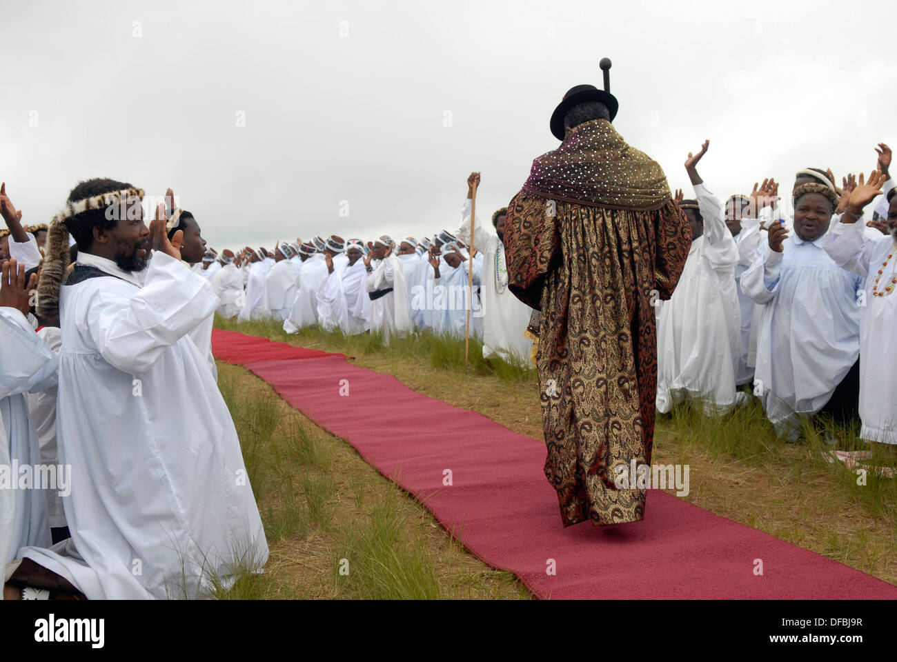
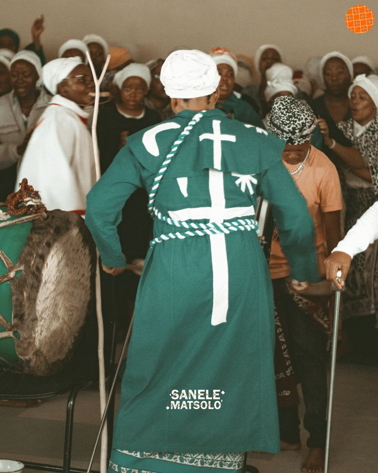
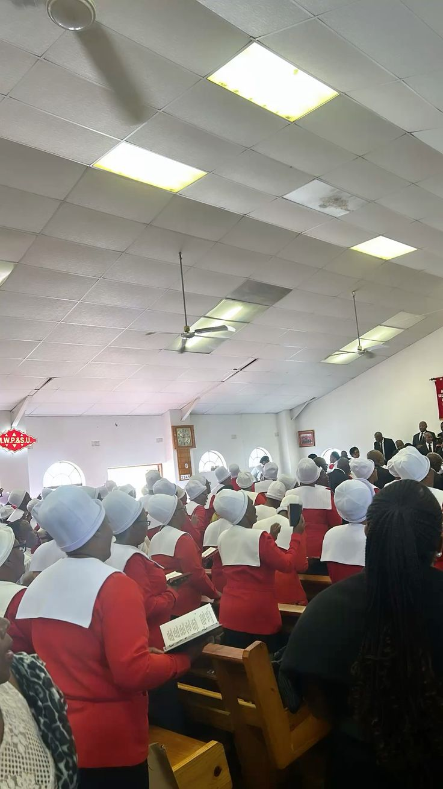

Church Branches & Locations
Find a Church Near You
Click any marker on the map to learn more about that congregation. You can also click a church card below to jump to its location on the map.
Limpopo – Zion Christian Church (ZCC)
Its headquarters is in the Limpopo province in the city of Moria. There are branches of ZCC in all provinces of South Africa but most are found in Gauteng. They are located in:
- Moria
- Alexandra
- Diepsloot
- Cosmo City
- George Goch
📍 Click this card to see on map
KwaZulu-Natal – AmaNazaretha (Shembe Church)
The Nazareth Baptist Church was founded in 1910/1911 by Isaiah Mloyiswa Mdliwamafa Shembe. It blends Christianity with Zulu traditions. The churches are in rural and suburban areas of KwaZulu-Natal. They are located in:
- eThekwini near Buffelsdraai and Verulam
- eNanda
- Doornfontein, Gauteng
📍 Click this card to see on map

Gauteng – AmaZion
There are different Zion churches throughout the province, such as AmaZion weGalile, Gospel Church in Zion, and Jerusalem Church of Zion. Some of these churches are of Zimbabwean descent but are based in South Africa. They are located in:
- Diepsloot
- Alexandra
- Honeydew
📍 Click this card to see on map

Methodist
There are different Methodist churches throughout South Africa and beyond, including Botswana and Zimbabwe. They are located in:
- Gauteng, Soweto
- Port Elizabeth (Gqeberha), Eastern Cape
- Francistown, Botswana
- Bulawayo, Zimbabwe
📍 Click this card to see Eastern Cape marker
